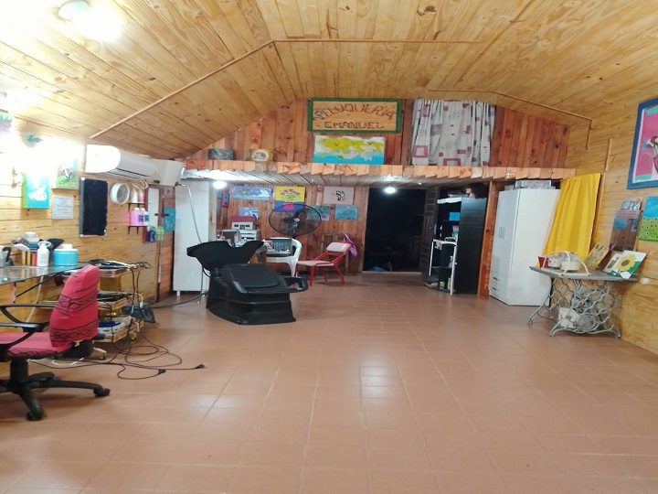
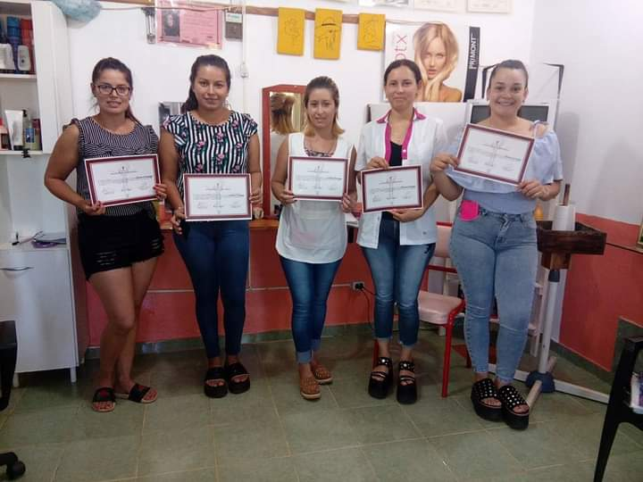
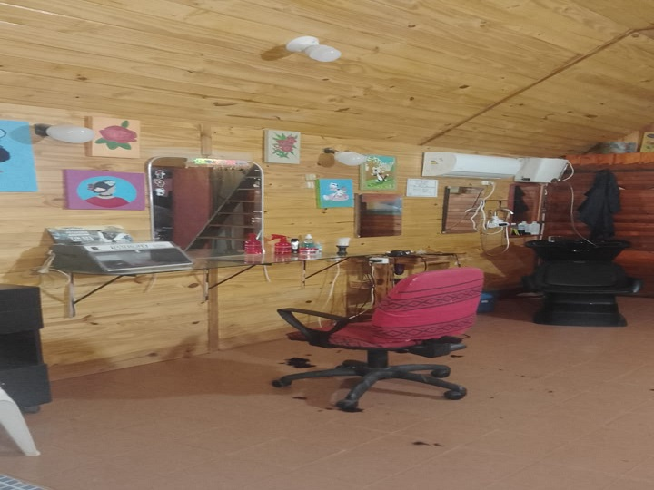

Historia Emanuel
Nacimiento
Fundada en el año 2000 en la ciudad de Santa Rosa, Corrientes, EMANUEL nació del sueño y la dedicación de María Rodríguez. Con una pasión por la belleza y el cuidado personal, María creó un espacio que pronto se convertiría en un referente de la peluquería en la región. A lo largo de los años, Emanuel ha ofrecido un servicio personalizado y de alta calidad, ganando la confianza de sus clientes y consolidándose como una peluquería de prestigio.


